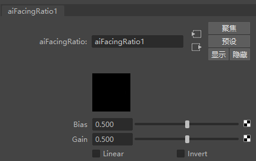
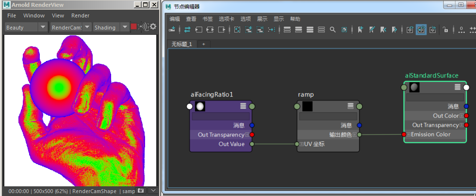
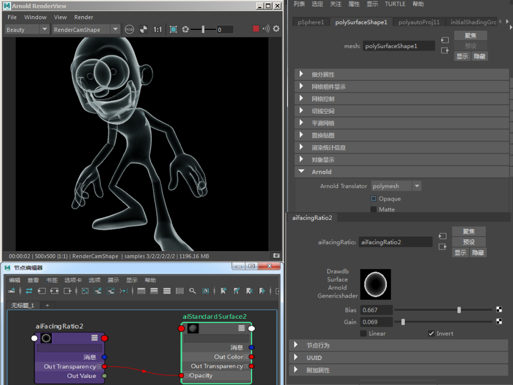

正面比(Facing Ratio)
| 延伸阅读 |
| 有关完整的着色器文档，请参见《Arnold 用户手册》中的工具着色器。 |

此着色器将返回着色法线和入射光线方向的点积的绝对值。
注意：
有关如何使用 facing_ratio 创建卡通着色器的教程，请单击此处和此处。

使用 facing_ratio 与 ramp_rgb 的 vcoord_ 相连实现的“热量贴图”效果

facing ratio 连接到 standard_surface 着色器的 opacity
由 Daniel M. Lara 制作的 Pepe 模型 (Pepeland)